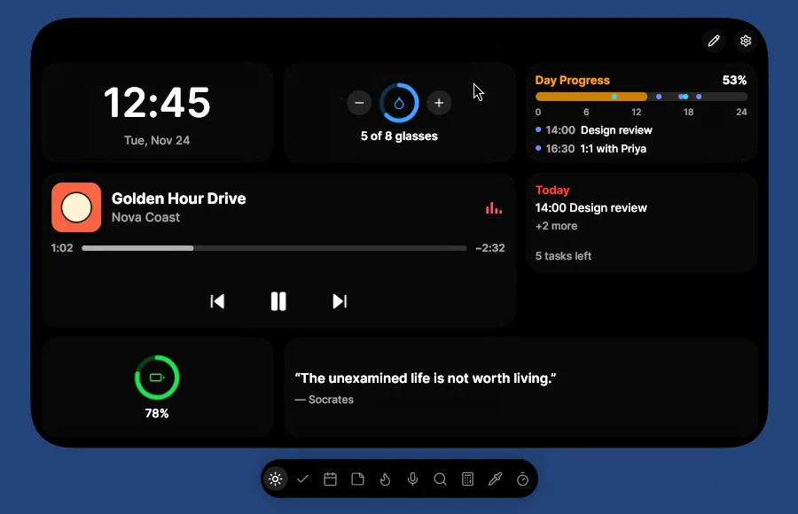
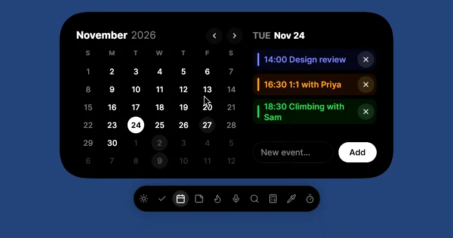
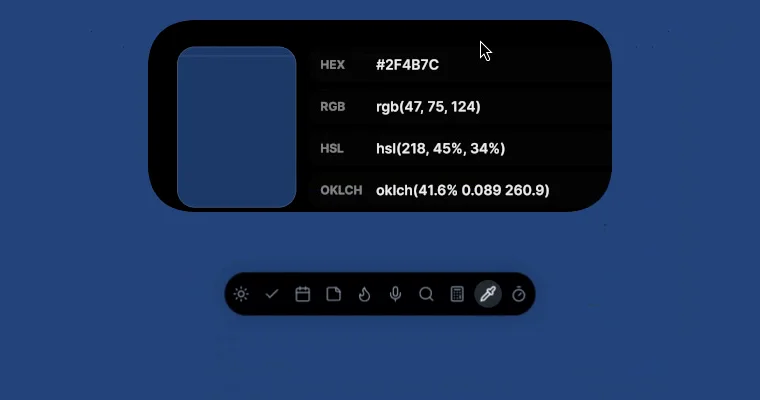
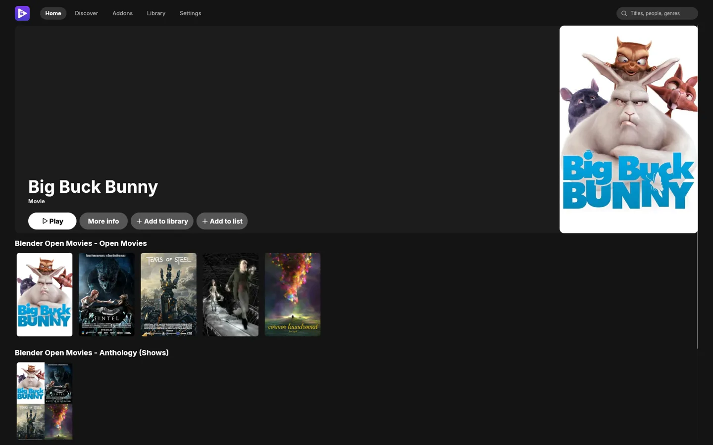
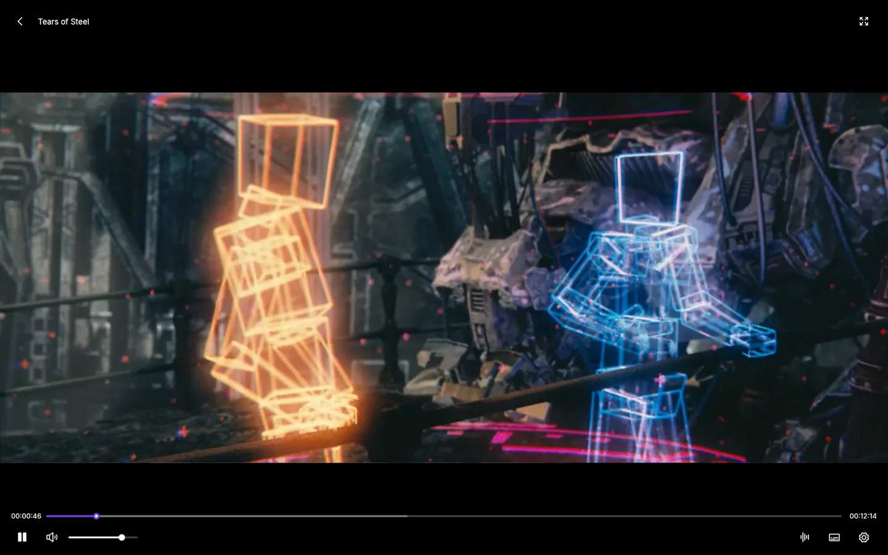
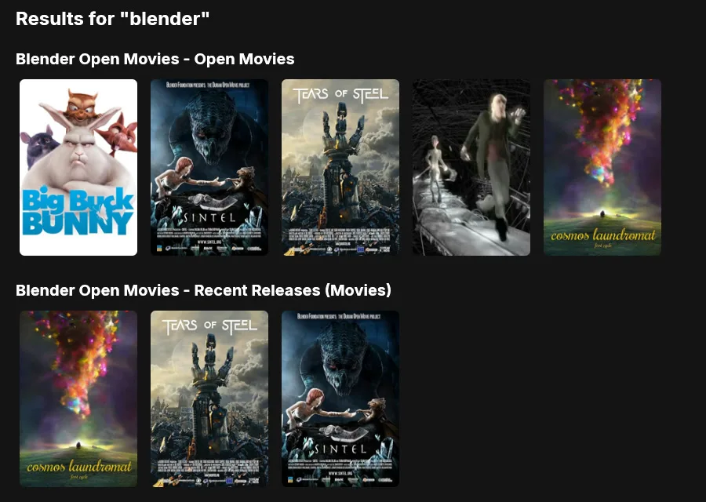
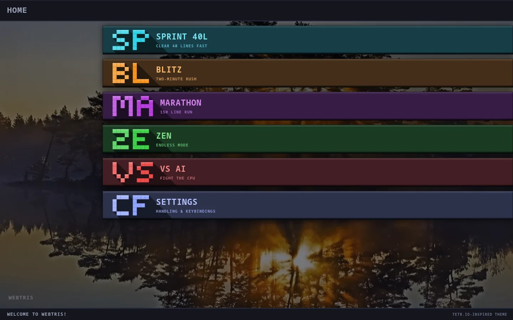
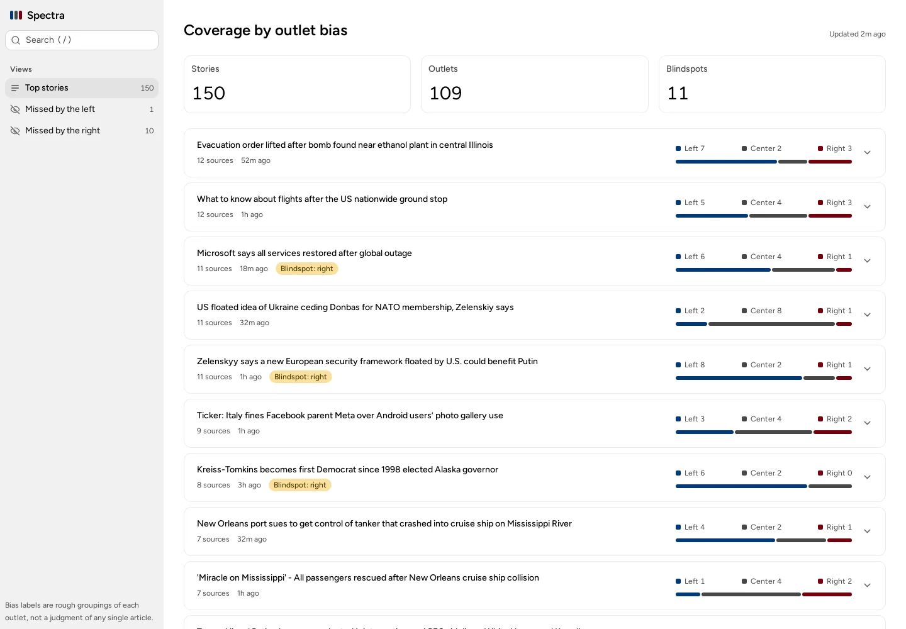
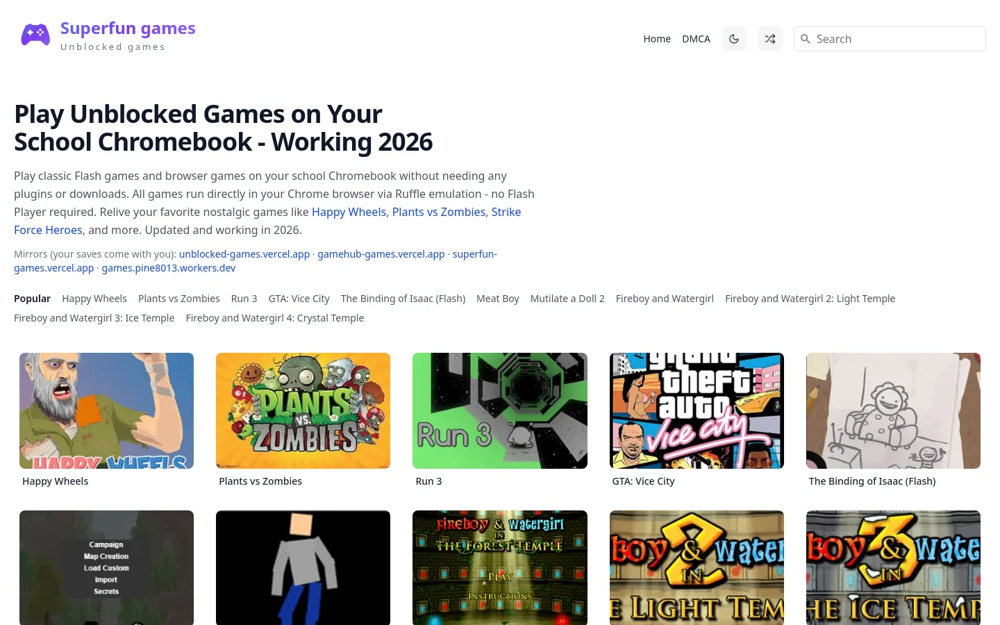

I'm theoneand33. I build desktop apps in Rust, small plugins and websites.
- 01RippleDynamic Island for every desktopRust2026
- 02Stremflix-rsDesktop client for Stremio addonsRust, egui2026
- 03webtrisFalling blocks with a bot to beatJavaScript2026
- 04ground-news-cloneNews from 110 outlets, by storyReact, Node2026
- 05extra-lazy.nvimPlain-editor mode for LazyVimLua2026
- 06gamify-freecodecampXP and streaks for freeCodeCampJavaScript2026
- 07close-on-right-click-modRight-click closes Minecraft menusJava2026
- 08Superfun gamesFlash games through RuffleJavaScript2025
01
Ripple
A Dynamic Island for Windows, macOS and Linux.
Ripple sits at the top of the screen as a small pill. Point at it and it opens into notifications, the song that's playing, the weather, a calendar, a colour picker and an AI assistant. On a MacBook it moves into the notch.



02
Stremflix-rs
A desktop client for Stremio addons.
You add addons by manifest URL, then browse their catalogues and play HTTP or torrent streams through libmpv. Watch progress goes into SQLite. When main changes, a nightly build goes out within 3 hours.



03
webtris
Falling blocks in the browser, with a bot to play against.
Plain JavaScript and canvas, with no build step and no dependencies. It has sprint, blitz, marathon and zen modes, a versus mode against a bot, and sound effects made with Web Audio oscillators.

04
ground-news-clone
News from 110 outlets, grouped by story.
It groups headlines into stories and counts how many left, centre and right outlets covered each one, so you can see which stories one side skipped. Each outlet's bias label lives in one JSON file.

Other projects
Superfun games
A games site that plays old Flash games in the browser through Ruffle, with search and a dark mode.

- close-on-right-click-modJava, Fabric mod
Right-click closes the open Minecraft menu, unless you're holding or pointing at an item.